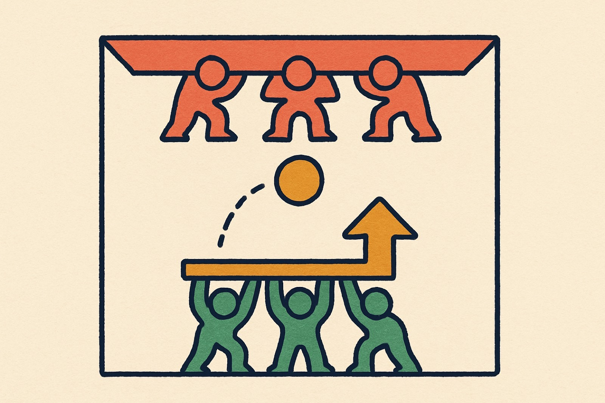

Price moves between floors and ceilings, it drifts in trends, and volume tells you which moves to believe. Read those three things and a chart stops looking like noise. Let me walk you through it.
Support is a price floor where buying tends to stop a decline. Resistance is the ceiling where selling stalls a rise. The market remembers these levels, and returns to them.

Support is the floor buyers defend. Resistance is the ceiling sellers guard.
Zoom out and every chart is doing one of three things. Learn the shape of each and you'll name it at a glance.
Volume is the number of shares traded. It doesn't predict the move. It tells you how much conviction is behind it. Drag the volume and watch the breakout go from suspect to believable.
A move that pushes through a level on heavy volume has real buyers or sellers behind it.
A breakout on thin volume is suspect. It can fail and snap right back through the level.
Take a breath before you practice. Watch me read one clean chart end to end: floor, ceiling, trend, then the volume that confirms it. I'll pause the narration the moment you press play.
See the order? Levels first, then trend, then volume to confirm. That's the exact read you're about to practice. Hit Continue whenever you're ready.
A chart appears. Call it: uptrend, downtrend, or sideways range. Tap your answer, get instant feedback, then the next one loads.
Tap a card to pick it up, then tap the column where it belongs. Support is the floor where buyers step in. Resistance is the ceiling where sellers take over.
Five questions. Nail them to earn your points and prove you can read a chart.
Support is the floor, resistance is the ceiling — both are zones, and either can break.
Trends come in three: up, down, and sideways range.
Draw the line along higher lows in an uptrend, lower highs in a downtrend.
Volume confirms conviction. A breakout is a decisive close through a level.